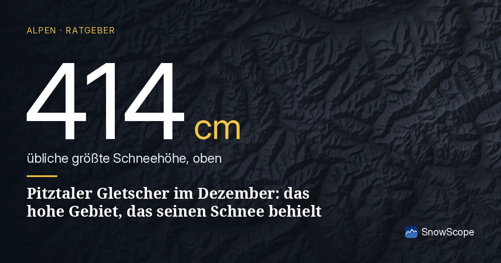

Pitztaler Gletscher im Dezember: das hohe Gebiet, das seinen Schnee behielt
Pitztaler Gletscher schwimmt gegen den Strom. Während viele Alpengebiete in den letzten Jahrzehnten fallende Dezemberschneehöhen zeigen, hielt dieser Gletscher in Tirol stabil oder verbesserte sich: Mittelstufe stieg von durchschnittlich 77 cm in den 1980er-90ern auf 85 cm in den letzten 15 Wintern. Diese Stabilität macht Dezember hier zu einer seltenen, lohnenswerten Wette.
Die Live-Schneeprognose für Pitztaler Gletscher in der SnowScope-AppSchneehöhen, Pulverschnee-Alarme und 3D-Karte, gratis.
Was dir das Gletschergelände bringt
Höhe und Eis zählen. Die Spitze des Pitztaler Gletschers liegt auf 3.424 m, deutlich über der Dezember-Regengrenze. In dieser Höhe hatte jeder einzelne Winter unserer 46-jährigen Datenreihe 30 cm oder mehr Mitte Dezember, und 100 % hielten bis Weihnachtswoche mindestens 60 cm. Die Mittelstufen-Station auf 2.576 m zeigt die gleiche perfekte Bilanz: kein Winter fiel in der Woche 15.–21. Dezember unter 30 cm.
Typischerweise hält die Mittelstufe am 15. Dezember 87 cm und die Spitze 171 cm. Bis Weihnachten liegt die Mittelstufe bei etwa 92 cm. In 85 % der Winter hatte diese Höhenlage bis Weihnachtswoche 60 cm oder mehr – die Tiefschneezone, nicht die Kratzerzone.


Die Talstation: eine andere Geschichte
Die Talstation auf 1.728 m erzählt eine andere Geschichte. Typischerweise hat sie am 15. Dezember 32 cm – über der 30-cm-Schwelle, aber nur knapp. Nur 59 % der Winter erreichen in der Woche vor Weihnachten dort 30 cm, und der typische erste Tag mit 30 cm liegt am 10. Dezember.
Das zählt für Familien oder Skifahrer, die sich in tieferer Höhe aufwärmen möchten. Der Plan hier ist, früh hochzufahren und von Mittelstufe oder Spitze zu fahren, dann mit der Bahn abzufahren. Felsen können anfang Dezember an der Talstation sichtbar werden. Vergangener Winter (2025–26) ist ein Beispiel: am 15. Dezember lagen dort nur 16 cm, während die Mittelstufe 50 cm hatte.
Dezember diesen Winter versus frühere Winter
Der Langzeit-Trend steht auf deiner Seite. Die alte Debatte, ob der Dezember schneereicher oder dünner wird, trifft hier nicht zu. An der Spitze stieg der Dezember-Durchschnitt von 142 cm in den ersten 15 Wintern auf 174 cm in den letzten 15. Selbst die Talstation verbesserte sich: von 31 cm auf 35 cm. Dies ist eine Ecke der Alpen, wo das vergletscherte Hochland Winterfeuchte noch in Schnee statt Regen verwandelt.
In der Weihnachtswoche hatten alle letzten 15 Winter 30 cm oder mehr auf Mittelstufe. Der Anteil mit 30 cm an der Talstation stieg von 60 % auf 67 %. Das ist keine Garantie – keine Saison ist das –, aber es ist so nah dran wie der Dezember in den Alpen kommt.
Preis und Ticketoptionen
Die Saison 2026-27 nutzt Pauschalpreise: EUR 77 für einen Tagespass für Erwachsene, EUR 410 für 6 Tage. Es gibt keinen Rabatt vor Weihnachten, also ist Dezember nicht günstiger als Januar oder Februar. Der Trade-off ist Schneesicherheit, nicht Preis.
Ein lohnender Bonus: Ein 2-Tages-Pass oder länger beinhaltet einen Tag auf Kaunertal-Gletscher, Winterberg Fendels oder Hochzeiger kostenlos. Das Rifflsee-Gebiet, separat betrieben, öffnet am 12. Dezember 2026, wenn du ein kostengünstiges zweites Gebiet in der Nähe möchtest.
Vergleich: Stubaier Gletscher nebenan
Der Stubaier Gletscher, ein Tal östlich, hat fast identischen Mittelstufenschnee im Dezember: 86 cm typischerweise am 15. Dezember und 100 % der Winter mit 30 cm in der Woche vor Weihnachten. Seine Talstation ist mit 40 cm leicht tiefer. Der Stubaier bietet auch einen 6-Tages-Pass für EUR 355 – etwa EUR 55 weniger als Pitztal.
Pitztals Vorteil ist die Höhe. Seine Spitze auf 3.424 m ist 216 m höher als Stubaiers 3.208 m, was mehr garantiertes Gelände über der Wettergrenze und längere Saison bis ins Frühjahr bedeutet. Wenn deine Gruppe auf Mittelstufen-Pisten zufrieden ist, bietet der Stubaier die gleiche Schneemenge für weniger. Wenn du maximale Höhe und den zusätzlichen Tag auf anderen Gletschern möchtest, rechtfertigt Pitztal die Kosten.
Wann im Dezember buchen
Anfang Dezember (1.–7. Dezember) ist eine 37-%-Chance an der Talstation und 100 % an der Spitze – ein Hochfahren-und-Abfahren-Trip. Mitte Dezember (8.–14. Dezember) ist sicherer: 50 % der Winter erreichen bis dahin 30 cm an der Talstation. Die Woche 15.–21. Dezember ist die Zone: 59 % an der Talstation, 100 % auf Mittelstufe und Spitze. Weihnachtswoche ist die beste Wette: 67 % der Winter haben 30 cm an der Talstation und fast sicherer Schnee von Mittelstufe aufwärts.
Vergangener Winter (2025–26) ist eine Warnung: selbst eine schwache Saison hinterließ am 15. Dezember 16 cm an der Talstation und 50 cm auf Mittelstufe. Dünn, aber nicht schneefrei. Wenn du unbedingt anfang Dezember kommen musst und Pläne nicht anpassen kannst, frag das Resort nach künstlicher Beschneiung auf tieferen Pisten.
Tipps für Skifahrer
- Buche einen 2-Tages-Pass oder länger: Das Ticket beinhaltet einen kostenlosen Tag auf Kaunertal-Gletscher, Winterberg Fendels oder Hochzeiger. Nutze ihn, um gegen einen schlechten Schneetag abzusichern.
- Fahre anfang Dezember von Mittelstufe (2.576 m) oder Spitze (3.424 m) und fahre mit der Bahn ab; die Talstation kann bis Mitte Dezember dünnen Schnee oder blanke Stellen haben.
- Dezember auf dem Gletscher wird kalt: auf 3.424 m erwarte weit unter Null. Pack Wärmekissen, Gesichtsschutz und Skibrille für Flachlicht und Wind.
- Wenn du Tiefschnee oder Skitournen möchtest, prüfe vor deiner Fahrt das Avalanche.report – Euregio Tirol Bulletin und miete einen lokalen Guide. Gletscherspalten sind ganzjährig eine Gefahr.
- Wenn dir Pitztals Preis zu hoch ist und deine Gruppe mit Mittelstufe zufrieden ist, vergleiche Stubaier Gletscher: gleiche Dezemberschneehöhe auf Mittelstufe für etwa EUR 55 weniger pro 6-Tages-Pass.
Zu diesen Zahlen
Die Schneehöhen der Skigebiete sind der meiste Schnee in den oberen Hängen am angegebenen Tag; es sind Schätzungen für eine Fläche, keine Messung an einem Punkt. Prognosen können sich ändern. Lies vor dem Freeriden immer den offiziellen Lawinenlagebericht.
Offizielle Lawinenlageberichte: Avalanche.report – Euregio Tyrol
Diesen Bericht zitieren
Für Forschung, Lehre oder Presse: Zahlen und Grafiken sind unter CC BY 4.0 mit dieser Quellenangabe frei nutzbar.
SnowScope (2026), Pitztaler Gletscher im Dezember: das hohe Gebiet, das seinen Schnee behielt, https://snowscope.app/blog/de/2026/11/pitztal-glacier-december-ski-snow-sure-price.html, abgerufen am 2026-11-14
SnowScope (Atlas Labs). (2026, November 14). Pitztaler Gletscher im Dezember: das hohe Gebiet, das seinen Schnee behielt. SnowScope snow reports. https://snowscope.app/blog/de/2026/11/pitztal-glacier-december-ski-snow-sure-price.html
BibTeX
@misc{snowscope2026pitztalglacierdecembersk,
author = {{SnowScope (Atlas Labs)}},
title = {Pitztaler Gletscher im Dezember: das hohe Gebiet, das seinen Schnee behielt},
year = {2026},
month = nov,
howpublished = {\url{https://snowscope.app/blog/de/2026/11/pitztal-glacier-december-ski-snow-sure-price.html}},
note = {Published 2026-11-14 14:54 UTC; accessed 2026-11-14}
}· CC BY 4.0 · Methoden, Daten und Werkzeuge →
Pitztaler Gletscher: Schnee und Temperatur nach Höhe, dieser Winter vs letzter (Werkzeuge) →
Pitztaler Gletscher folgen
Gratis: eine Nachricht, wenn Neuschnee kommt, und jeden Morgen die Vorhersage.